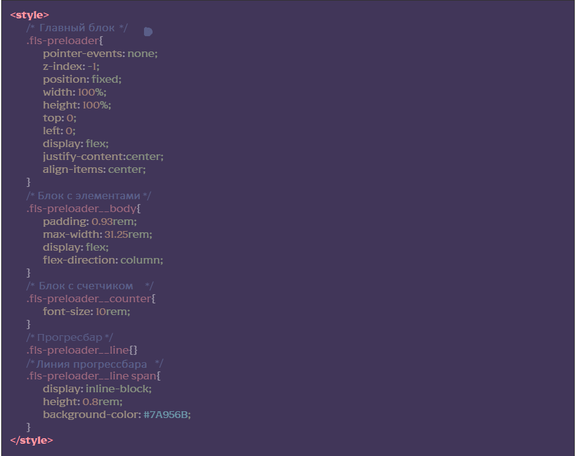

Подключение модуля
Image [HTML] для всех HTML-страниц, где нужно использовать прелоадер, добавляем подключение файла. html/_preloader.htm

Сделать это нужно внизу файла перед подключением @@include(‘html/_js.htm’,{}), можно использовать сниппет prl
[CSS] для редактирования стилей прелоадера необходимо зайти в файл html/_preloader.htm и редактировать стили для классов прелоадера:
